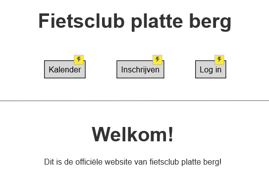
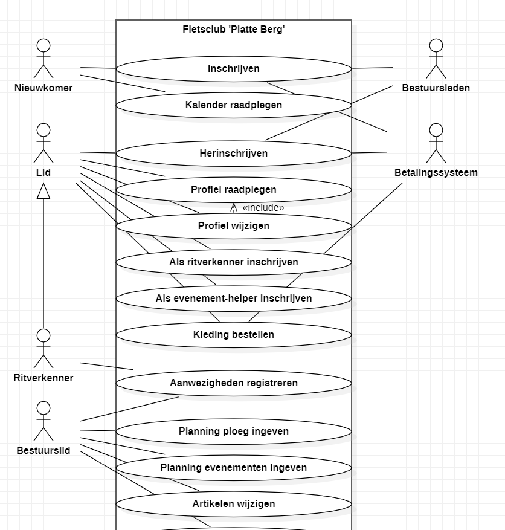
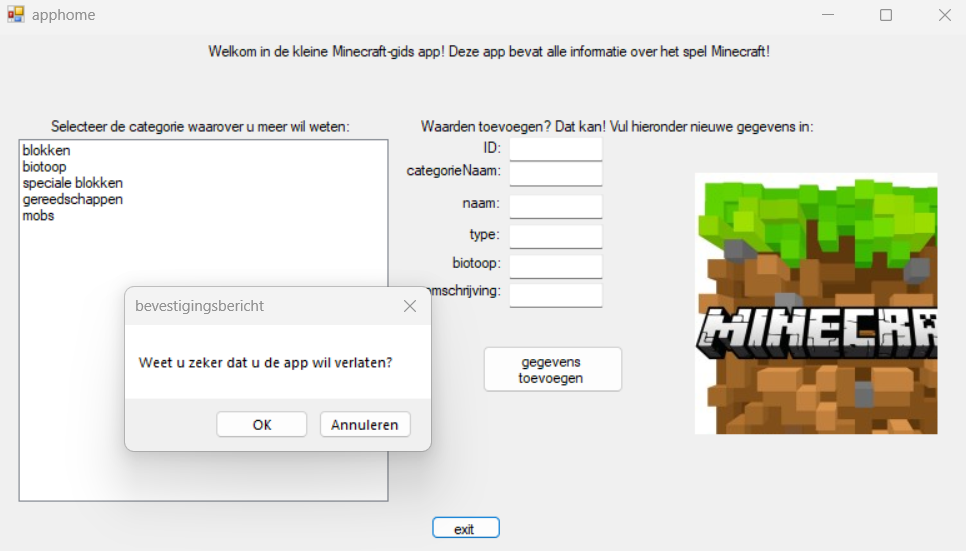
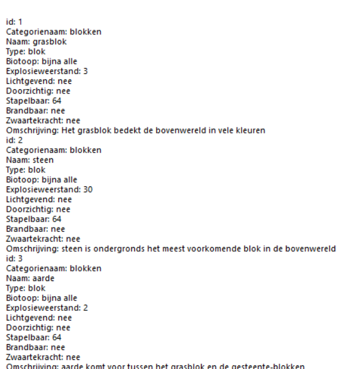

Requirements Analysis project


Voor het vak Requirement Analysis heb ik in groep een analyse gemaakt van een opdracht van een klant (in werkelijkheid een docent). In het geval van mijn groep ging het om een fietsclub "Platte berg" die behoefte had aan digitalisering. Tijdens het project zijn we meermaals bij de "klant" langsgegaan om de analyse zo goed mogelijk te simuleren, en te leren hoe dit er in het echt, in IT-bedrijven aan toe gaat. Voor het project hebben we in groep meerdere rapporten uitgewerkt, en een prototype. Het use case diagram en het prototype wat we gemaakt hebben is hierboven te zien. Ikzelf heb voor dit groepswerk gewerkt aan een paar pagina's van het prototype, en gezamelijk meegeholpen aan het rapport en het use case diagram.
DevOps Minecraft App project

